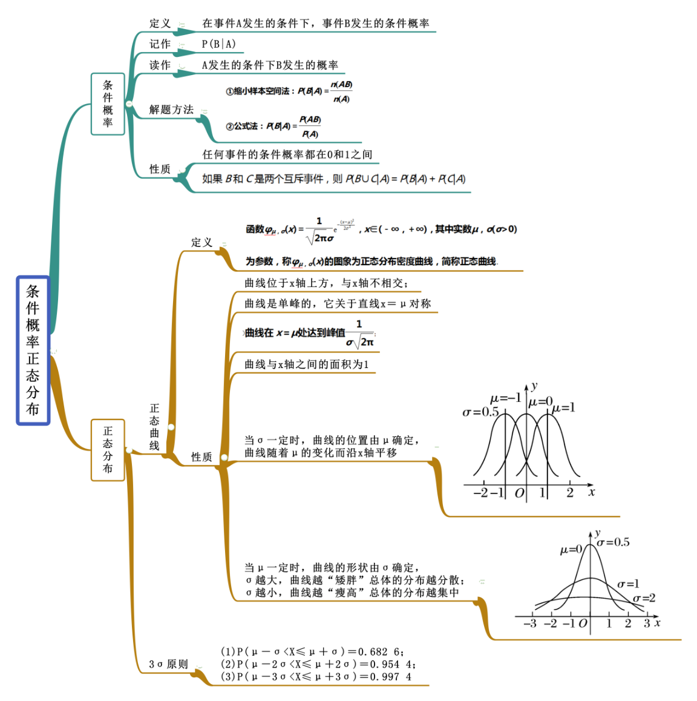
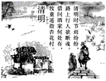
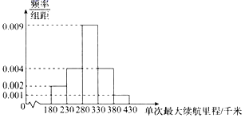

← 概率资料目录考点 38 · 正态分布和条件概率 · 练习
资料来源：学科网一轮复习笔记 · 共 14 题
正态分布和条件概率思维导图
点击图片查看原图第 1 题
1．一个袋中装有大小相同的5个白球和3个红球，现在不放回的取2次球，每次取出一个球，记“第1次拿出的是白球”为事件A，“第2次拿出的是白球”为事件B，则事件A发生的条件下事件B发生的概率是（
）
查看答案与解析
【答案】A
【解析】由题可理解条件概率，则可由条件概率公式得；,
第 2 题
2．一个袋中装有大小相同的3个白球和3个黑球，若不放回地依次取两个球，设事件 为“第一次取出白球”，事件
为“第二次取出黑球”，则概率
（
）
为“第一次取出白球”，事件
为“第二次取出黑球”，则概率
（
）
A．
B．

C．

D．
查看答案与解析
【答案】B
【解析】设事件
为“第一次取出白球”，事件
为“第二次取出黑球”，
，
第一次取出白球的前提下，第二次取出黑球的概率为：.故选：B.
第 3 题
3．从
中不放回地依次取 个数，事件
“第一次取到的是奇数”，事件
“第二次取到的是奇数”，则
（
）
个数，事件
“第一次取到的是奇数”，事件
“第二次取到的是奇数”，则
（
）
A．
B．
C．

D．
查看答案与解析
【答案】A
【解析】由题意得，
∴
．选A．
第 4 题
4．下图展现给我们的是唐代著名诗人杜牧写的《清明》，这首诗不仅意境极好，而且还准确地描述出了清明时节的天气状况，那就是“雨纷纷”，即天气多阴雨．某地区气象监测资料表明，清明节当天下雨的概率是0.9，连续两天下雨的概率是0.63，若该地某年清明节当天下雨，则随后一天也下雨的概率是（
）

查看答案与解析
【答案】B
【解析】记事件A表示“清明节当天下雨”，B表示“第二天下雨”，
由题意可知，，所以
．
故选：B.
第 5 题
5．袋中装有完全相同的5个小球，其中有红色小球3个，黄色小球2个，如果不放回地依次摸出2个小球，则在第一次摸出红球的条件下，第二次摸出红球的概率是（
）
查看答案与解析
【答案】C
【解析】因为第一次摸到红球的概率为，则第一次摸出红球且第二次摸出红球的概率为，所以所求概率为，故选C．
第 6 题
1．已知随机变量 服从正态分布，且，则
的值为(
)
服从正态分布，且，则
的值为(
)
查看答案与解析
【答案】B
【解析】
由题意得，随机变量
服从正态分布，所以图象关于
对称，
又因为，所以，解得，故选B.
第 7 题
2．随机变量 服从正态分布，若，则
的值（
）
服从正态分布，若，则
的值（
）
查看答案与解析
【答案】C
【解析】 随机变量
服从正态分布，，得对称轴是，
随机变量
服从正态分布，，得对称轴是，
，，，
所以，故选C.
第 8 题
3．某地区有10000名高三学生参加了网上模拟考试，其中数学分数服从正态分布，成绩在(117,126]之外的人数估计有（
）
（附：若
服从，则，
）
A．1814人
B．3173人
C．5228人
D．5907人
查看答案与解析
【答案】A
【解析】由题,,,
所以,所以
人,故选:A
第 9 题
4．已知随机变量ξ服从正态分布N（3，σ2），且P（ξ＞2）＝0.85，则P（3＜ξ＜4）＝_____．
查看答案与解析
【答案】0.35
【解析】∵随机变量ξ服从正态分布N（3，σ2），∴μ＝3，
∵P（ξ＞2）＝0.85，∴P（2＜ξ＜3）＝0.85﹣0.5＝0.35，
则P（3＜ξ＜4）＝P（2＜ξ＜3）＝0.35.故答案为：0.35．
第 10 题
5．随着5G商用进程的不断加快，手机厂商之间围绕5G用户的争夺越来越激烈，5G手机也频频降低身价飞人寻常百姓家．某科技公司为了给自己新推出的5G手机定价，随机抽取了100人进行调查，对其在下一次更换5G手机时，能接受的价格（单位：元）进行了统计，得到结果如下表，已知这100个人能接受的价格都在
之间，并且能接受的价格的平均值为2350元（同一组的数据用该组区间的中点值代替）．
分组
|
一
|
二
|
三
|
四
|
五
|
手机价格X（元）
|
|
|
|
|
|
频数
|
10
|
x
|
y
|
20
|
20
|
（1）现用分层抽样的方法从第一、二、三组中随机抽取6人，将该样本看成一个总体，从中随机抽取2人，求其中恰有1人能接受的价格不低于2000元的概率；
（2）若人们对5G手机能接受的价格X近似服从正态分布 ，其中
，其中 为样本平均数，
为样本方差
为样本平均数，
为样本方差 ，求
．
，求
．
附：
．若，则，
．
查看答案与解析
【答案】（1）；（2）0.3413.
【解析】（1）因为，所以
．
因为，
所以，解得，
．
因为第1组的人数为10，第2组的人数为20，第3组的人数为30．
所以利用分层抽样法在60名学生中抽取6名学生，其中第1，2，3组分别抽取1人，2人，3人．
所以恰有1人能接受的价格不低于2000的概率
．
（2）由题意可知，
，所以，
故
．
第 11 题
6．2019年春节期间，我国高速公路继续执行“节假日高速公路免费政策”．某路桥公司为掌握春节期间车辆出行的高峰情况，在某高速公路收费点记录了大年初三上午9:20～10:40这一时间段内通过的车辆数，统计发现这一时间段内共有600辆车通过该收费点，它们通过该收费点的时刻的频率分布直方图如下图示，其中时间段9:20～9:40记作区间，9:40～10:00记作，10:00～10:20记作 ，10:20～10:40记作，例如：10点04分，记作时刻64.
，10:20～10:40记作，例如：10点04分，记作时刻64.
（1）估计这600辆车在9:20～10:40时间段内通过该收费点的时刻的平均值（同一组中的数据用该组区间的中点值代表）；
（2）为了对数据进行分析，现采用分层抽样的方法从这600辆车中抽取10辆，再从这10辆车中随机抽取4辆，设抽到的4辆车中，在9:20～10:00之间通过的车辆数为X，求X的分布列与数学期望；
（3）由大数据分析可知，车辆在每天通过该收费点的时刻服从正态分布，其中
可用这60辆车在9:20～10:40之间通过该收费点的时刻的平均值近似代替，
可用样本的方差近似代替（同一组中的数据用该组区间的中点值代表），已知大年初五全天共有1000辆车通过该收费点，估计在9:46～10:22之间通过的车辆数（结果保留到整数）．
参考数据：若，则①；②；③
．
查看答案与解析
【答案】（1）10点04分；（2）分布列详见解析，；（3）.
【解析】（1）这600辆车在9:20～10:40时间段内通过该收费点的平均数为
，
即10点04分；
（2）结合频率分布直方图和分层抽样的方法可知：抽取的10辆车中，
在10:00前通过的车辆数就是位于[20,60)这一区间的车辆数，
即，所以
的可能值为.
所以，
，
，所以
的分布列为
所以
（3）由（1）得，
，
所以，估计在9:46～10:22这一时间段内通过的车辆数，
也就是
通过的车辆数，由，
得，
所以估计在9:46～10:22这一时间段内通过的车辆数为
（辆）.
第 12 题
7．2019年7月1日到3日，世界新能源汽车大会在海南博鳌召开，大会着眼于全球汽车产业的转型升级和生态环境的持续改善．某汽车公司顺应时代潮流，最新研发了一款新能源汽车，并在出厂前对100辆汽车进行了单次最大续航里程（理论上是指新能源汽车所装载的燃料或电池所能够提供给车行驶的最远里程）的测试．现对测试数据进行分析，得到如图的频率分布直方图．

（1）估计这100辆汽车的单次最大续航里程的平均值 （同一组中的数据用该组区间的中点值代表）；
（同一组中的数据用该组区间的中点值代表）；
（2）根据大量的汽车测试数据，可以认为这款汽车的单次最大续航量程X近似地服从正态分布，经计算第（1）问中样本标准差s的近似值为50．用样本平均数
作为
的近似值，用样本标准差s作为
的估计值，现任取一辆汽车，求它的单次最大续航里程恰在250千米到400千米之间的概率；
（3）某汽车销售公司为推广此款新能源汽车，现面向意向客户推出“玩游戏，送大奖”活动，客户可根据抛掷硬币的结果，操控微型遥控车在方格图上行进，若遥控车最终停在“胜利大本营”，则可获得购车优惠券．已知硬币出现正，反面的概率都是，方格图上标有第0格、第1格、第2格……第50格．遥控车开始在第0格，客户每掷一次硬币，遥控车向前移动一次，若掷出正面，遥控车向前移动一格（从k到
），若掷出反面，遥控车向前移动两格（从k到
），直到遥控车移到第49格（胜利大本营）或第50格（失败大本营）时，游戏结束．设遥控车移到第n格的概率为，试证明
是等比数列，并解释此方案能否成功吸引顾客购买该款新能源汽车．
参考数据：若随机变量
服从正态分布，则，，
．
查看答案与解析
【答案】（1）300；（2）；（3）见解析.
【解析】（1）
（千米）．
（2）由
．
∴
．
（3）遥控车开始在第0格为必然事件，
．
第一次掷硬币出现正面，遥控车移到第一格，其概率为，即
．
遥控车移到第
格的情况是下面两种，而且只有两种：
①遥控车先到第
格，又掷出反面，其概率为
．
②遥控车先到第
格，又掷出正面，其概率为
．
∴
．
∴
．
∴
时，数列
是等比数列，
首项为，公比为
的等比数列．
∴，，
，……，
．
∴
．
．
∴获胜的概率，
失败的概率
．
∴
．
∴获胜的概率大．
∴此方案能成功吸引顾客购买该款新能源汽车．
第 13 题
8．为了监控某种零件的一条生产线的生产过程，检验员每天从该生产线上随机抽取16个零件，并测量其尺寸（单位：cm）.根据长期生产经验，可以认为这条生产线正常状态下生产的零件的尺寸服从正态分布.
（1）假设生产状态正常，记X表示一天内抽取的16个零件中其尺寸在
之外的零件数，求
及X的数学期望；
（2）一天内抽检零件中，如果出现了尺寸在
之外的零件，就认为这条生产线在这一天的生产过程可能出现了异常情况，需对当天的生产过程进行检查.
（ⅰ）试说明上述监控生产过程方法的合理性；
（ⅱ）下面是检验员在一天内抽取的16个零件的尺寸：
9.95
|
10.12
|
9.96
|
9.96
|
10.01
|
9.92
|
9.98
|
10.04
|
10.26
|
9.91
|
10.13
|
10.02
|
9.22
|
10.04
|
10.05
|
9.95
|
经计算得，，其中xi为抽取的第i个零件的尺寸，.
用样本平均数
作为μ的估计值，用样本标准差s作为σ的估计值，利用估计值判断是否需对当天的生产过程进行检查？剔除
之外的数据，用剩下的数据估计μ和σ（精确到0.01）.
附：若随机变量Z服从正态分布，则，，.
查看答案与解析
【答案】（1），
（2）（ⅰ）见详解；（ⅱ）需要.
,
【解析】（1）抽取的一个零件的尺寸在
之内的概率为0.9974，
从而零件的尺寸在
之外的概率为0.0026，
故.
因此.
的数学期望为.
（2）（i）如果生产状态正常，
一个零件尺寸在
之外的概率只有0.0026，
一天内抽取的16个零件中，出现尺寸在
之外的零件
概率只有0.0408，发生的概率很小.
因此一旦发生这种情况，就有理由认为这条生产线在这一天的生产过程
可能出现了异常情况，需对当天的生产过程进行检查，
可见上述监控生产过程的方法是合理的.
（ii）由，
得
的估计值为，
的估计值为，
由样本数据可以看出有一个零件的尺寸在
之外，
因此需对当天的生产过程进行检查.
剔除
之外的数据，
剩下数据的平均数为，
因此
的估计值为.
，
剔除
之外的数据，
剩下数据的样本方差为，
因此
的估计值为.
第 14 题
9．2019年女排世界杯（第13届女排世界杯）是由国际排联
举办的赛事，比赛于2019年9月14日至9月29日在日本举行，共有12支参赛队伍.本次比赛启用了新的排球用球
_，已知这种球的质量指标ξ（单位：
）服从正态分布.比赛赛制采取单循环方式，即每支球队进行11场比赛，最后靠积分选出最后冠军.积分规则如下（比赛采取5局3胜制）：比赛中以
或
取胜的球队积3分，负队积0分；而在比赛中以
取胜的球队积2分，负队积1分.9轮过后，积分榜上的前2名分别为中国队和美国队，中国队积26分，美国队积22分.第10轮中国队对抗塞尔维亚队，设每局比赛中国队取胜的概率为.
（1）如果比赛准备了1000个排球，估计质量指标在
内的排球个数（计算结果取整数）
（2）第10轮比赛中，记中国队
取胜的概率为 ，求出
的最大值点，并以
作为p的值，解决下列问题.
，求出
的最大值点，并以
作为p的值，解决下列问题.
（i）在第10轮比赛中，中国队所得积分为X，求X的分布列；
（ii）已知第10轮美国队积3分，判断中国队能否提前一轮夺得冠军（第10轮过后，无论最后一轮即第11轮结果如何，中国队积分最多）？若能，求出相应的概率；若不能，请说明理由.
参考数据：，则，
，.
查看答案与解析
【答案】（1）477个；（2）；（i）见解析；（ii）能提前一轮夺得冠军，.
【解析】∵，∴
所以质量指标在
内的排球个数约为
个
（2），.
令，得.
当
时，，
在
上为增函数；
当
时，，
在
上为减函数.
所以
的最大值点.从而.
的可能取值为.
，
，
，
，
 的分布列为
的分布列为
|
3
|
2
|
1
|
0
|

|
|
|
|
|
若，则中国队10轮后的总积分为29分，美国队即便第10轮和第11轮都积3分，则11轮过后的总积分是28分，，所以，中国队如果第10轮积3分，则可提前一轮夺得冠军，其概率为.